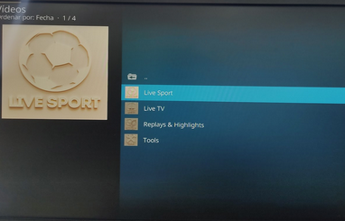
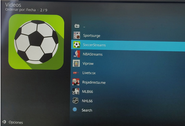
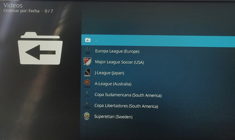
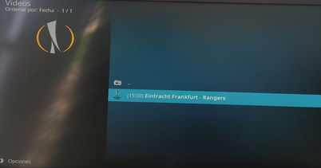
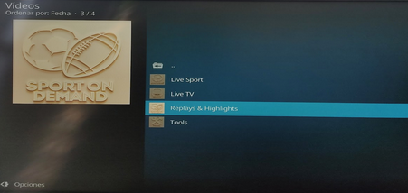
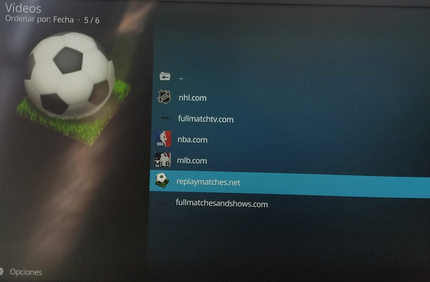
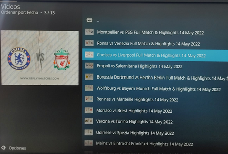
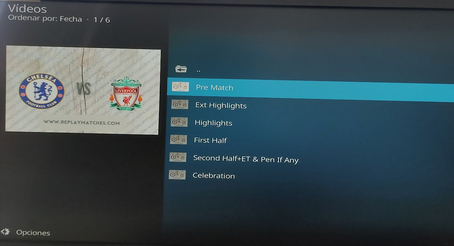
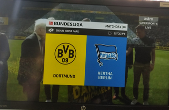

Nos dirijimos al apartado addons y seleccionamos Apex Sports

Apareceran diferentes opciones. Life sports es para ver deportes en vivo, live tv es para ver repeticiones y highlights. Emprezamos con deportes en directo asi que hacemos clic en live sports

Nos apareceran diferentes deportes y ligas, selecciona la que quieras ver

Depende a la hora y el día que entremos en el apartado en directo saldrán distintas opciones pero a la hora que hemos entrado aparecen estas, vamos a seleccionar Europa League

Aquí nos aparece el partido y la hora a la que se juega, cuando sea la hora del partido podremos ver perfectamente esta final en directo

Ahora volvemos atras y seleccionaremos la opcion de replays & highlights

Marcamos el canal que queramos, vamos a ver una emisión de fútbol pasada

Ahora seleccionamos el partido que queremos ver, hay de todas las ligas.

Nos sladran diferentes opciones como pre partido, primera mitad, highlight... Nosotros seleccionamos la que mas nos guste

Hemos elegido ver el partido entre el Dortmund y el Hertha de Berlín ya jugado. Ya que el Chelsea vs Liverpool era en directo. Dejamos distintas imágenes del partido